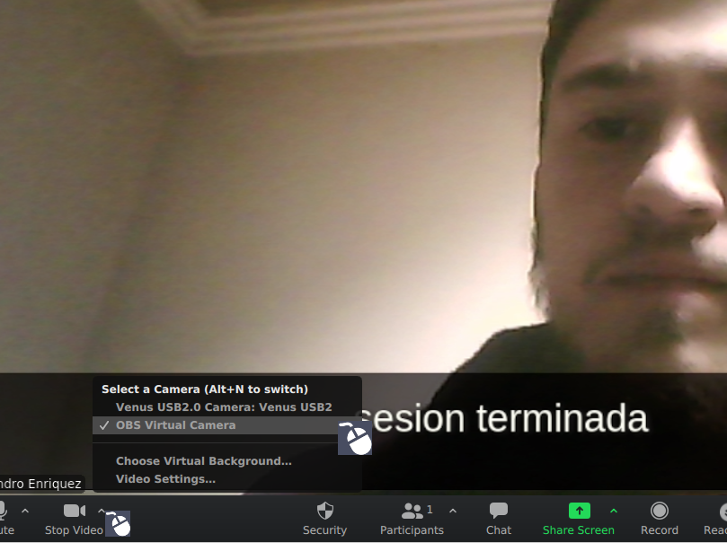

¿Como utilizar en plataformas de videoconferencia?
La implementación de la cámara virtual previamente creada sobre una plataforma de videoconferencia es muy sencillo y los pasos a seguir para cualquier herramienta de este tipo deben ser muy similares, para la demostración se utilizará Zoom.
Dentro de la reunión tenemos el botón para el manejo de la cámara para la reunión, en las opciones de dicho botón escogemos la cámara virtual de OBS, llamada "OBS Virtual Camera". Seleccionamos esta cámara y ya podremos visualizar los subtitulos en nuestra videoconferencia.
